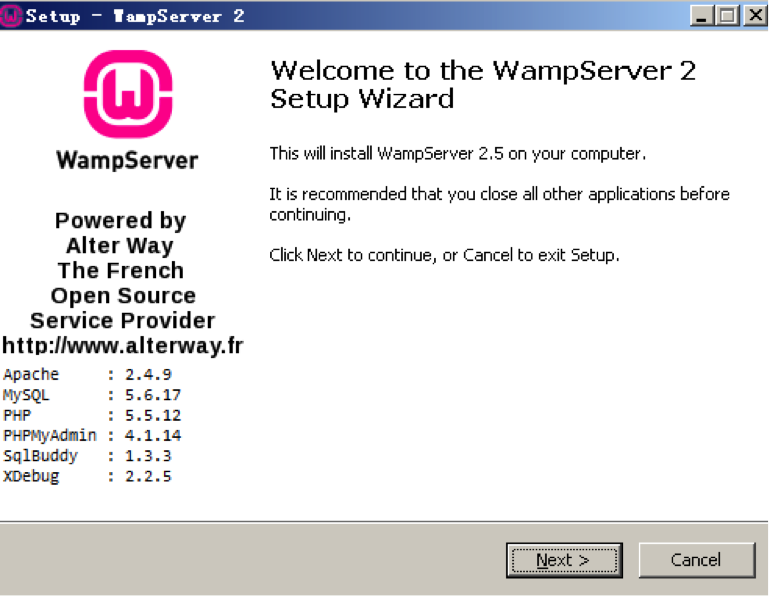
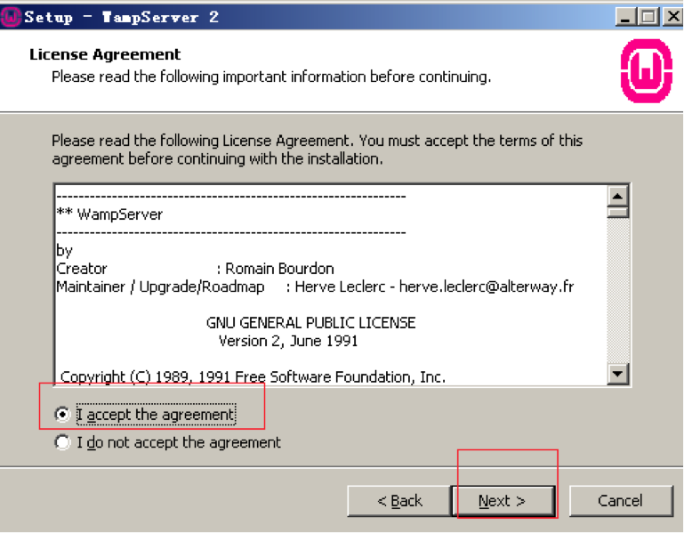
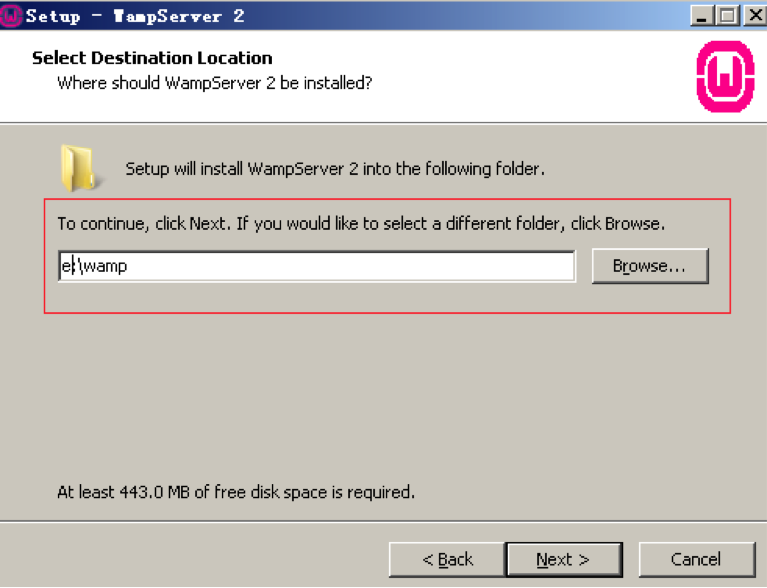
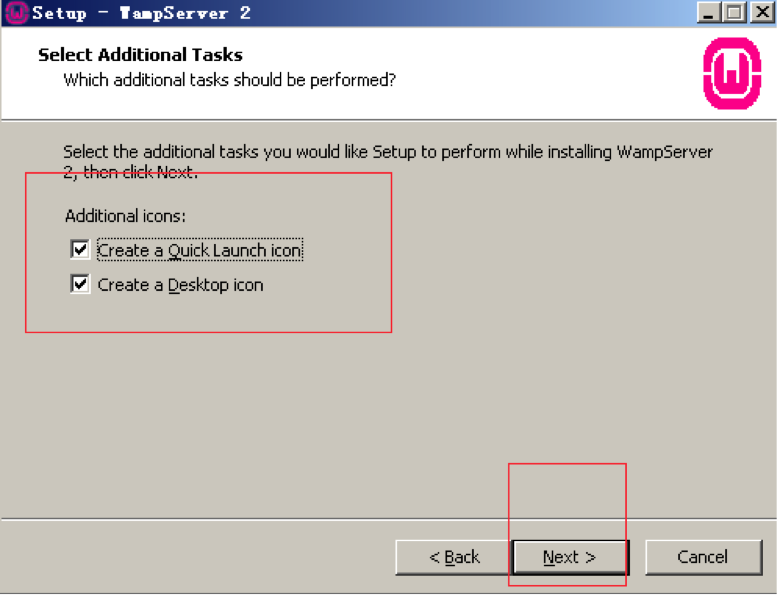
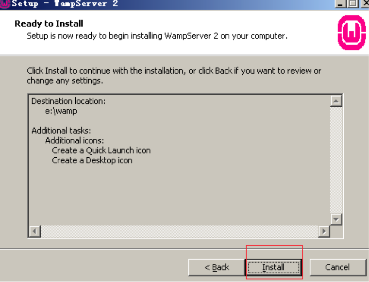
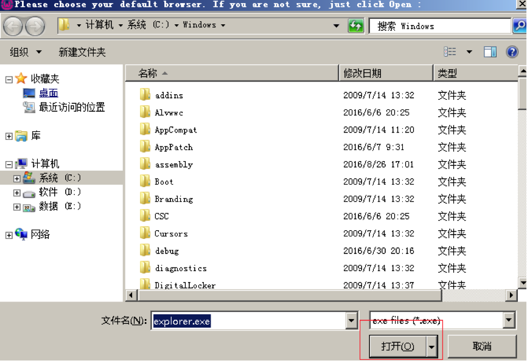
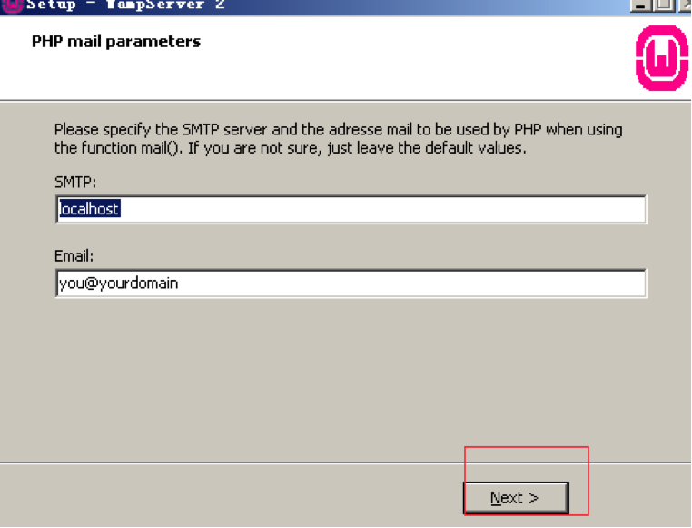
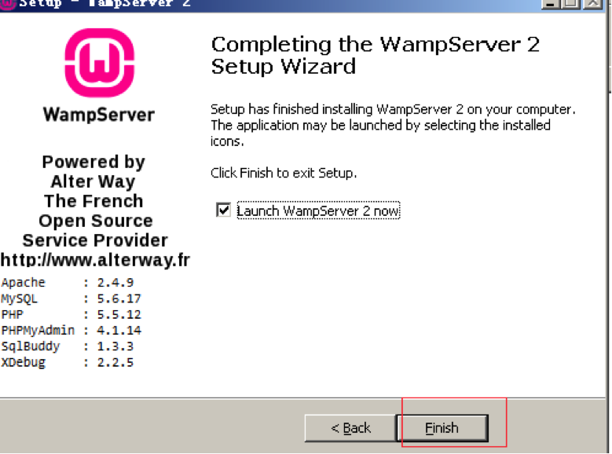
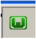
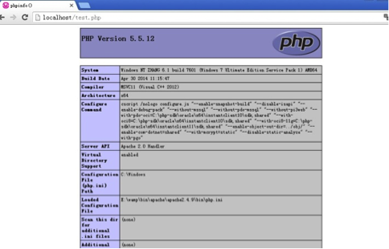

Make your own web server in your personal computer.
Frequently asked questions.
Step 0
This page is a guide how to use our product to make your own web server in your personal computer.
Demonstration environment: OS win7-64bit
Software: wampserver
After downloading, please double click on the exe file
wampserver2.5-Apache-2.4.9-Mysql-5.6.17-php5.5.12-64b.exe . When open the install setup, please click "Next" to continue with the installation.








Step 3
Once finish , there is a wampserver icon  in your taskbar, you can click it to set lanagure, or start up all services.
Step 4
Click wampserver icon ,choose “www directory”, you will see the web directory, you can put your web file in this directory. In this page, we create a test.php file, the content of test.php is <?php phpinfo()?>.
Step 5
Input http://localhost/test.php in your browser, you will see the following page.

Step 6
After use our product, you will own a personal ip, and your web is on the Internet, other people can use the website: http://your-static-ip/test.php to see your web in anywhere.